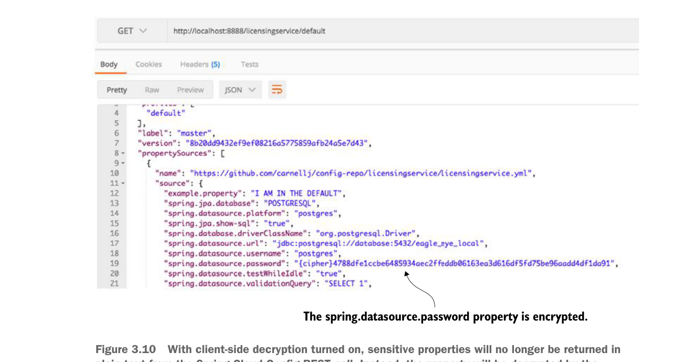

Because the licensing service is now responsible for decrypting the encrypted properties, you need to first set the symmetric key on the licensing service by making sure that the ENCRYPT_KEY environment variable is set with the same symmetric key (for example, IMSYMMETRIC) that you used with your Spring Cloud Config server.
Next you need to include the spring-security-rsa JAR dependencies in with licensing service:
<dependency>
<groupId>org.springframework.security</groupId>
<artifactId>spring-security-rsa</artifactId>
</dependency>These JAR files contain the Spring code needed to decrypt the encrypted properties being retrieved from Spring Cloud Config. With these changes in place, you can start the Spring Cloud Config and licensing services. If you hit the http://localhost:8888/licensingservice/default endpoint you’ll see the spring.datasource.password returned in its encrypted form. Figure 3.10 shows the output from the call.

With client-side decryption turned on, sensitive properties will no longer be returned in plain text from the Spring Cloud Config REST call. Instead, the property will be decrypted by the calling service when it loads its properties from Spring Cloud Config.